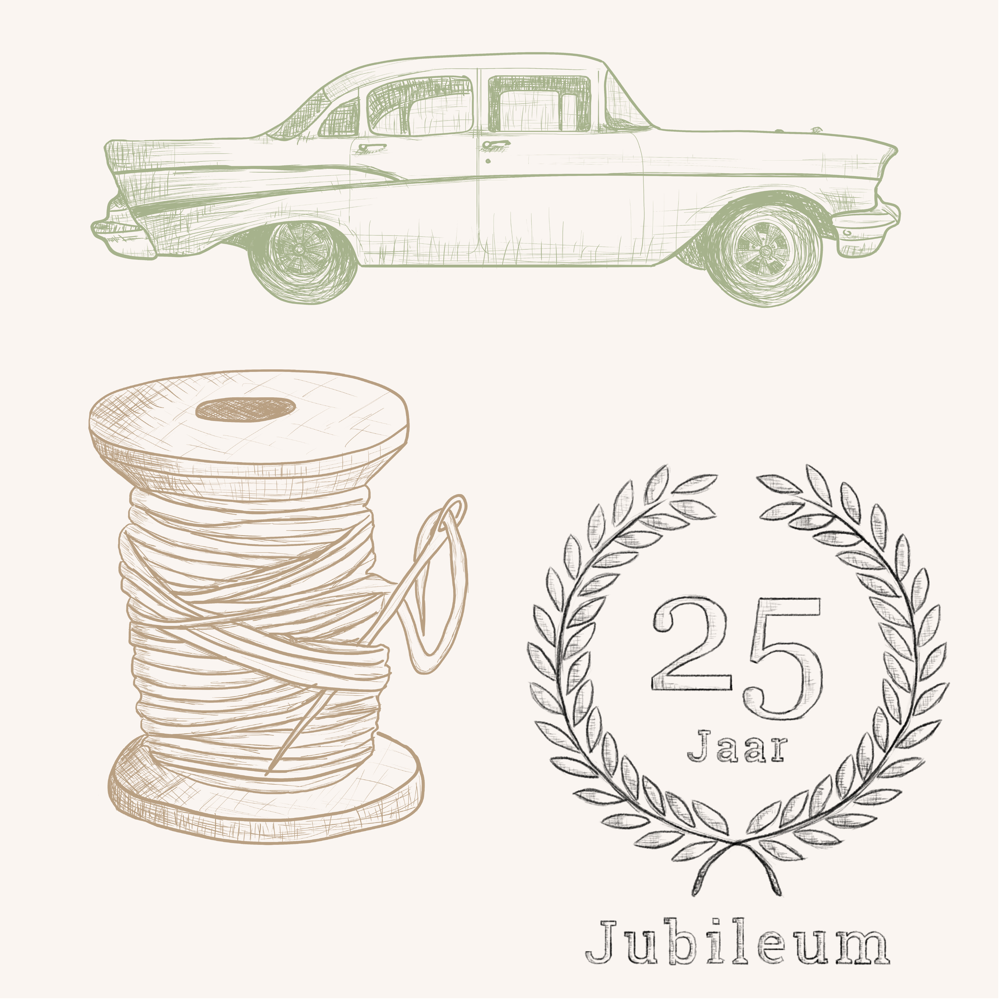
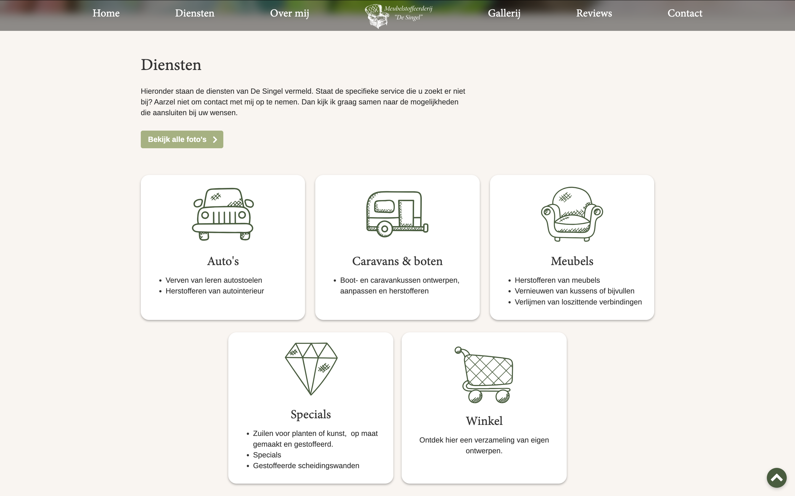
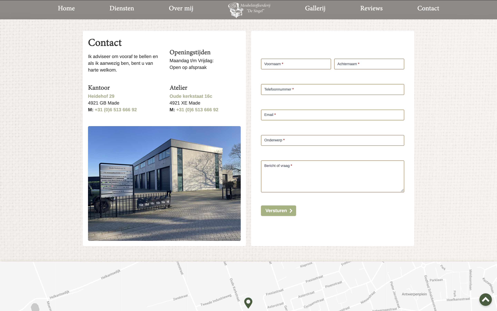
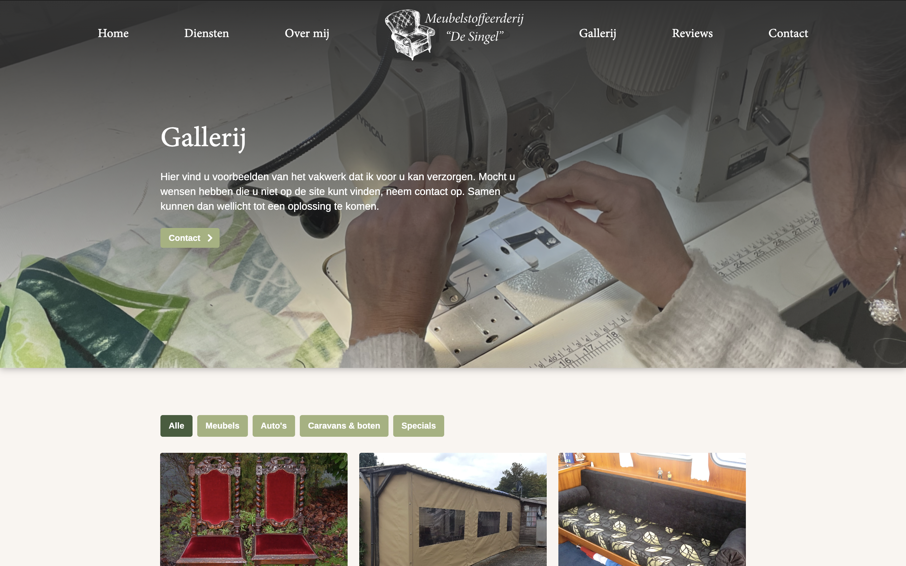
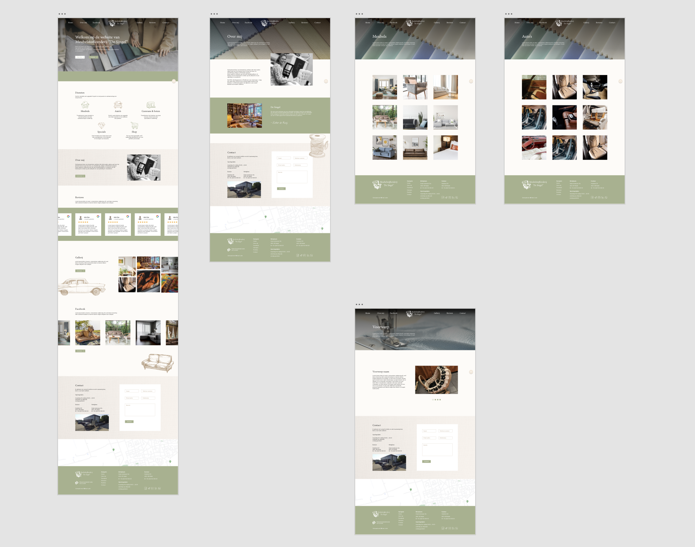

Webdesign / illustreren - Meubelstoffeerderij “De Singel”
Tijdens mijn stage bij Loile kreeg ik de opdracht om een website te ontwerpen voor meubelstoffeerderij De Singel. De wens van de klant was een rustige en frisse uitstraling met een subtiele vintage sfeer.
Om dat gevoel te versterken koos ik voor een zachte groentint als hoofdkleur. Deze kleur straalt rust uit en sluit goed aan bij het ambachtelijke karakter van de meubelstoffeerderij.
Tijdens het ontwerpproces gaf de klant aan dat ze graag illustraties op de website wilde gebruiken. Het bestaande logo had al een schetsachtige illustratiestijl, dus het was belangrijk dat nieuwe illustraties daar goed bij aansloten. Daarom heb ik een reeks illustraties ontworpen in dezelfde handgetekende stijl. De schetsachtige lijnvoering past mooi bij het idee van stoffen, texturen en de vintage uitstraling van het bedrijf.
Het maken van deze illustraties was een van de leukste onderdelen van het project, omdat ik hier zowel mijn ontwerpvaardigheden als mijn creativiteit in kwijt kon.




